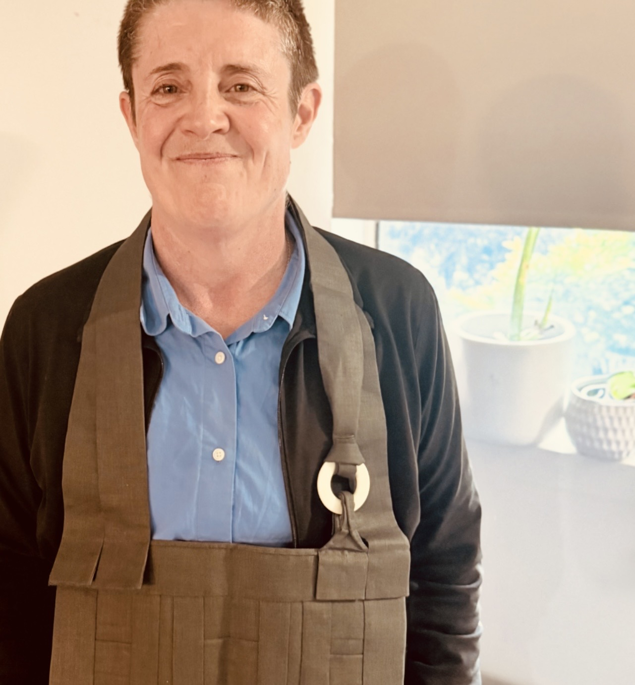

Friendly ZEN
The Way of Friendliness
In Friendly Zen, the practice we do is ordinary, practical, and helpful. It is not about becoming super-human, it is about realising our own humanity. We cannot know how practice will unfold for us, where it will take us, or what it will reveal to us. If we want to find out, we have to do the practice!
At Friendly Zen we are encouraged to bring the qualities of open-heartedness - honesty, kindness, and generosity - to all aspects of our lives, including our meditation practice. We learn to see our life as it is, and ourselves as we are; and rather than trying to be something we think we ought to be, we let our own good qualities emerge.
We simply sit and allow things to settle in their own time. This is the training in patience. When we can be friendly to ourselves - patient, understanding, and kind - then we will find we are friendly to others, too.
What we value
We value simplicity, inclusivity, humility, and joyfulness, and the natural unfolding of the wisdom we already possess, through contemplative practices.
We value what each person brings to the practice; we work with each individual's own manifestation of, and understanding of, their life.
We value the practice, and each other, and are open to, and willing to, support and learn from each other and from our mistakes.
Teacher

Jack is a Zen teacher in the Ordinary Mind Zen School and an ordained Soto Zen Priest in the Suzuki Roshi lineage.
Jack Zenko Wicks trained for 14 years in the Ordinary Mind Zen School and in 2026 received Denkai transmission from her teacher Andrew Sono Tootell from OzZen Ordinary Mind Zen School. She is a Soto Zen Priest ordained in the Suzuki Roshi lineage by Rev. Neti Mushin Parekh from Twining Vines Zen Centre. Jack completed the traditional Japanese Zen koan studies curriculum in 2026, after training under Liyea Bretz, Arno Hess, and Neti Mushin.
Jack has trained in the United States doing practice periods at the San Francisco Zen Center and Upaya Zen Center in Santa Fe, New Mexico. In addition to her Zen training Jack has also trained extensively in the Vipassana and Insight Buddhist traditions in Australia. She has a strong commitment to engaged Buddhist practice including prison mindfulness, homelessness, and addressing issues of abuse in Buddhist communitites.
Jack holds B.Ec., B.Sc. (First Class Honours in Mathematics), M.A. (Linguistics), Ph.D. (Mathematical Sciences) degrees and in her earlier pre-Buddhist life was an academic who held teaching or research positions at the Australian National University, QIMR Berghofer Medical Research Insitute, and The University of Queensland.
Ordinary Mind Zen School
Charlotte Joko Beck (1917-2011) and her dharma successors established the Ordinary Mind Zen School, whose purpose is set forth in the following statement:
The Ordinary Mind Zen School intends to manifest and support practice of the Awakened Way,
as expressed in the teaching of Charlotte Joko Beck. The school is composed of her dharma successors
and teachers and successors they, as individuals, have formally authorised. There is no affiliation with
other Zen groups or religious denominations; however, membership in this school does not preclude
individual affiliation with other groups. Within the school there is no hierarchy of Dharma Successors.
The Awakened Way is universal; the medium and methods of realisation vary according to circumstances.
Each Dharma successor in the School may apply diverse approaches and determine the structure of any
organisation that s/he may develop to facilitate practice.
The Successors acknowledge that they are ongoing students, and that the quality of their teaching derives from
the quality of their practice. As ongoing students, teachers are committed to the openness and fluidity
of practice, wherein the wisdom of the absolute may be manifested in/as our life. An important function of
this School is the ongoing examination and development of effective teaching approaches to insure
comprehensive practice in all aspects of living.
May the practice of this School manifest wisdom and compassion, benefitting all beings.